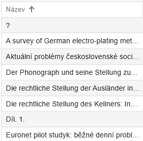

Obrazovka úložiště a hledání
Videonávod
Po přihlášení se otevře hlavní přehledová obrazovka - úložiště. Obrazovka je rozdělena do dvou horizontálních podoken. Objekt vybraný v horním okně lze ve spodní části rozbalit do stromové struktury.
Každé podokno má vlastní lištu s operacemi, které můžete provádět nad vybranými objekty. Některé operace (např. export, mazání) jsou dostupné na více místech a jsou popsány v kontextu zakládání konkrétních typů dokumentů. Zobrazené údaje (sloupce) se mohou lišit podle individuálního nastavení vašeho profilu.
Hledání v úložišti
Dvouřádková lišta horní části úložiště umožňuje vyhledávání podle různých kritérií a jejich kombinací.
Pokročilé hledání
Ve výchozím stavu je aktivní režim Pokročilé hledání:
Pro efektivní hledání dodržujte následující pravidla:
-
Vyhledávání podle polí s hodnotami z roletky (červeně označená pole) spusťte pomocí tlačítka Vyhledat.
-
U polí pro volný text stačí stisknout klávesu Enter, a to i v kombinaci s vyplněnými roletkami.
-
Výchozí hodnoty všech vyhledávacích polí jsou nastaveny na Vše (all).
-
Výjimkou je pole Model - zde si aplikace pamatuje naposledy použitou hodnotu.
-
Roletková pole odpovídají přesně sloupcům v zobrazení.
-
Po zadání hodnoty do pole se vpravo zobrazí červený křížek pro její vymazání.
-
Identifikátorem se rozumí UUID objektu - zadejte ho přesně včetně prefixu (např.
uuid:178c7f50-7fe7-4a99-b942-ec7a67e006d3). Použijte znak*pro částečné hledání (např.*178*). -
Při vyhledávání ve volném textu dbejte na správnou diakritiku.
-
Velká a malá písmena se nerozlišují.
Dotaz
Při použití volby Dotaz máte k dispozici jedno vyhledávací pole ve spojení s vybraným modelem.
Do tohoto pole můžete zadat např.:
-
název nebo podnázev (či jejich části),
-
identifikátory (čárový kód, ČČNB, ISBN, ISSN, OCLC, UUID, URN:NBN),
-
signaturu, ID katalogového záznamu (např. pole 001, sysno).
Hledání ve smazaných
Hledání ve smazaných objektech funguje podobně jako Rozšířené hledání, ale pracuje s jinou datovou množinou. Zatímco rozšířené hledání prohledává aktivní objekty, hledání ve smazaných cílí na objekty označené k vymazání. Tyto objekty se běžně nezobrazují, ale zůstávají v databázi se speciálním příznakem.
Upozornění
Při mazání se odstaňují vazby mezi objekty.
S nalezenými objekty můžete dál pracovat - např. je obnovit. Obnovit lze zpravidla pouze horní úroveň objektu (např. bez připojených částí či stran).
Třídění v úložišti
Záznamy v horním okně úložiště můžete seřadit podle vybraného sloupce kliknutím na záhlaví, na jeho název. Vedle názvu se zobrazí šipka označující směr třídění (vzestupně/sestupně).
Vícenásobné třídění podle více sloupců není možné.
Příklad vzestupného setřídění podle názvu:

Příklad sestupného setřídění podle data vytvoření: